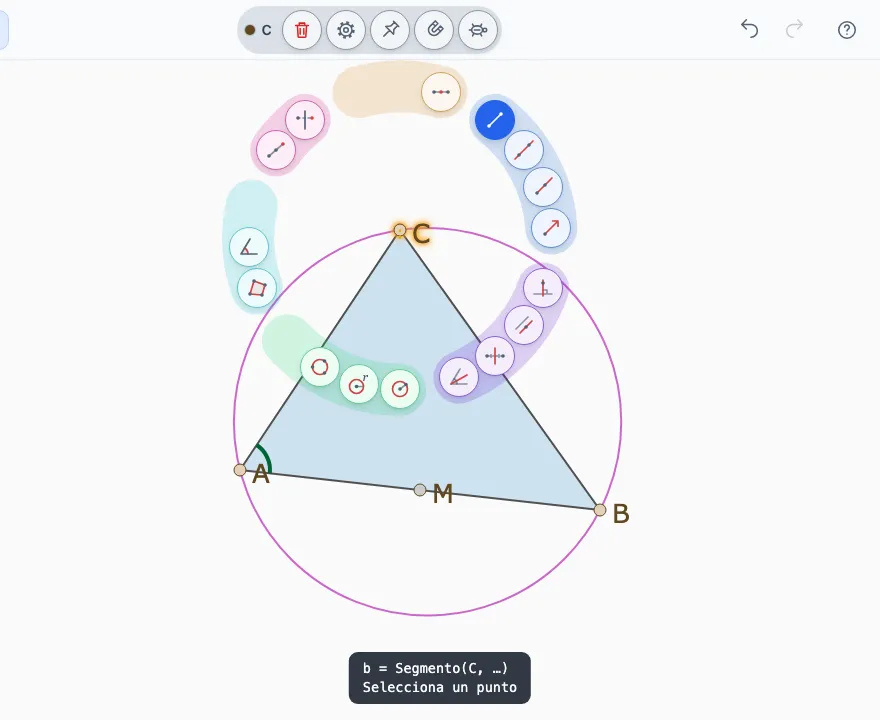

Construir con gestos
Tocar la figura
| Lugar tocado | Resultado |
|---|---|
| un lugar vacío | punto libre (sobre el suelo z = 0 en 3D) |
| cerca de un cruce | intersección de los dos objetos, que brillan al pasar el puntero (a menos de 24 px) |
| un objeto | selección y anillo de sus herramientas |
| un lugar vacío, con el anillo abierto | cierre del anillo, sin crear ningún punto |
| un lugar vacío o un cruce, con la paleta abierta | nada, salvo con la herramienta Punto |
| un objeto, con la paleta abierta | selección sin anillo: la paleta muestra sus herramientas |
Un texto, una expresión o un deslizador solo se seleccionan: no tienen anillo.
El anillo de herramientas

El anillo solo muestra las herramientas aplicables al objeto tocado. Cada herramienta ocupa siempre el mismo lugar; una herramienta no aplicable deja su lugar vacío. Familias, en el sentido de las agujas del reloj desde arriba:
| Familia | Herramientas |
|---|---|
| Puntos | punto sobre objeto, intersección, punto medio o centro |
| Rectas | segmento, recta, semirrecta, vector |
| Construcciones | perpendicular, paralela, mediatriz, bisectriz |
| Circunferencias | centro y punto, centro y radio, tres puntos, esfera (3D) |
| Polígonos, ángulos, lugares | polígono, ángulo, lugar |
| Transformaciones | simetrías central y axial, de un punto o de un objeto (polígono, circunferencia…) |
Pasar el puntero por una herramienta muestra en la indicación la
línea que escribirá y el argumento esperado:
b = Segmento(C, …), «Selecciona un punto». Las
acciones sobre el propio objeto (eliminar, configurar…) están en
la
zona contextual
de la barra.
Seleccionar los argumentos
Elegida la herramienta, una vista previa del objeto sigue al puntero y los objetos aceptados brillan al pasar por encima. Donde se espera un punto, se selecciona a elección un punto existente, un objeto (se crea un punto sobre objeto), un cruce (se crea una intersección) o un lugar vacío (se crea un punto libre).
- Polígono: los vértices y luego de nuevo el primero. Arrastrar un polígono cuyos vértices son puntos libres lo desplaza en bloque, salvo si está fijo (Objeto fijo en las propiedades).
- Circunferencia (centro y radio): en el anillo, mantener pulsado el icono y mover el ratón o el dedo para ajustar el radio; soltar para crear la circunferencia. Arrastrarla después cambia su radio.
- Lugar geométrico: se ofrece en un punto que depende de un punto sobre objeto; se crea con un clic.
- Ángulo y bisectriz: un punto del primer lado, el vértice, un punto del segundo lado.
Casos particulares
- Objetos superpuestos: un menú da la línea de cada uno; al pasar por ella, el objeto brilla. Un punto tiene siempre prioridad, y un cruce da directamente la intersección.
- Con el dedo: durante una herramienta, el dedo apoyado muestra la vista previa sin mover nada y selecciona al levantarlo. Se puede pulsar el icono y deslizar hasta el objetivo en un solo gesto.
- Borde de la ventana: el anillo se desplaza para caber entero, unido al objeto por una línea de puntos; sigue al objeto si la figura se mueve.
- Abandonar: Esc o la ✕ de la indicación.
- Mover: durante una herramienta, arrastrar sirve para apuntar; el botón derecho siempre mueve objetos y vista.
- Consultar: un clic derecho muestra las propiedades del objeto señalado, sin soltar la herramienta ni contar como argumento.